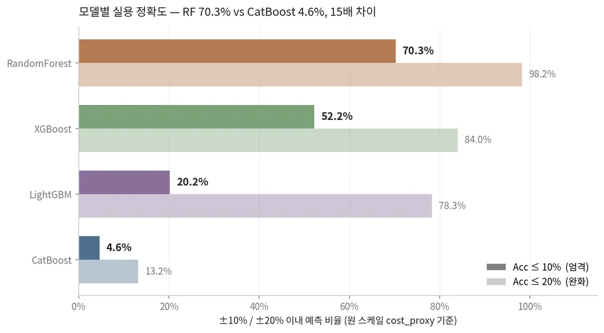
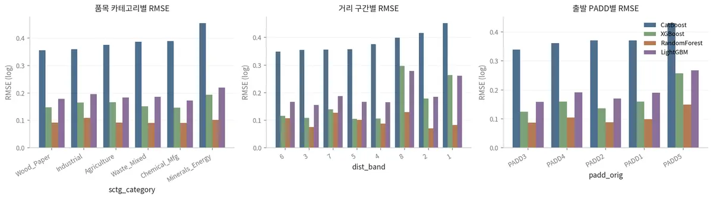
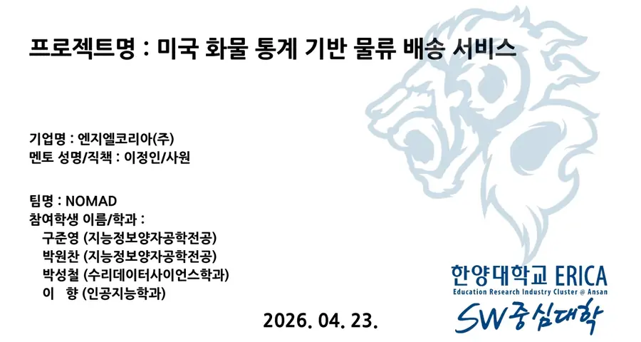

exp/02 · 데이터 · 예측
물류 운송비 예측
거리만으로는 설명되지 않는 운송비를, 데이터로.




The problem
같은 거리라도 품목·유가·경기에 따라 비용이 달라집니다.
단순 거리 기반 추천은 실제 운송비와 물류 흐름을 반영하지 못했습니다.
The result
RandomForest가 ±10% 이내 70.3%로 가장 실용적이었습니다.
Process
흩어진 데이터를 하나의 학습 가능한 형태로.
- FAF5 + 외부 데이터품목·거리·물동량에 유가, 거시경제, 인구 이동을 한 행으로 결합했습니다.
- 조합 단위 재구성연도 × 출발·도착 × 품목 × 거리 단위로 2017–22년 데이터를 다시 묶었습니다.
- VIF로 중복 제거정보가 겹치는 Feature를 다중공선성 검사로 걸러냈습니다.
- Optuna × 4 → LLM4개 모델을 튜닝해 RF를 고르고, llama-3.3-70b가 절감 대안을 설명합니다.
Learnings
큰 데이터와 작은 팀이 가르쳐 준 것.
메모리도 분석이다
큰 데이터에서는 메모리 관리가 분석만큼 중요했습니다.
예시로 소통한다
말로 어긋날 때는 예시 결과물을 먼저 보여주는 것이 가장 빨랐습니다.